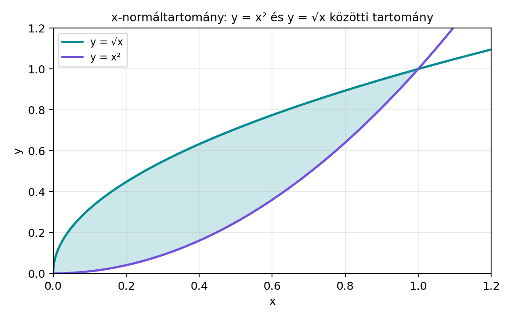

25.2.1 Motiváció: miért van szükség
nem téglalap alakú tartományokra?
A Kettős integrál téglalapon és a
Fubini-tétel alfejezetben a kettős integrált csak téglalap alakú
tartományon értelmeztük, és az iterált integrál határait rögzített
konstansok adták. A valóságban azonban a területek ritkán téglalapok:
egy háromszög alakú telek, egy parabola és egy egyenes közötti síkidom
vagy egy körlap belső része mind olyan tartomány, amelyen integrálni
szeretnénk. Ha például egy ferde tető alatti légtér térfogatát
számítjuk, az alapterület nem téglalap, hanem valamilyen görbe vonalú
tartomány. Ebben az alfejezetben kiterjesztjük a kettős integrált az
úgynevezett normáltartományokra: olyan síkrészekre, amelyeket
két függvénygrafikon határol, és amelyeken az integrálás visszavezethető
egymás utáni egyváltozós integrálásra.
Az alapgondolat egyszerű: egy normáltartományon a belső integrál
határai már nem konstansok, hanem a másik változó függvényei. Ezzel a
technikával a kettős integrálok széles osztályát tudjuk kiszámítani, és
lehetőség nyílik az integrálási sorrend cseréjére is, ami néha az
egyetlen út a megoldáshoz.
25.2.2 Szemléletes kép
Az alábbi ábra egy tipikus
-normáltartományt
mutat: a
tartományt alulról az
,
felülről az
görbe határolja, miközben
az
intervallumon fut végig. A satírozott terület minden függőleges metszete
egy
intervallum.

x-normáltartomány: y = x² és y = √x
közötti tartomány - A satírozott rész a D tartomány: 0 ≤ x ≤ 1, x² ≤ y ≤
√x. A függvények a határoló görbék. A függőleges metszetek alsó
végpontja x², felső végpontja √x.
Az ábrán a két görbe az
és
pontokban metszi egymást, így a tartomány zárt. Ha egy rögzített
értéknél függőleges vonalat húzunk, az pontosan a két görbe közötti
szakaszt metszi ki: ez lesz a belső integrál intervalluma.
25.2.3 Definíciók
A normáltartományoknak két típusát különböztetjük meg aszerint, hogy
melyik változó szerint írjuk fel a határokat.
Definíció. Az
folytonos függvényekkel, ahol
minden
-re,
az
halmazt
-normáltartománynak
nevezzük (más néven első típusú normáltartománynak). Itt az
változó fut a rögzített
intervallumon, és minden rögzített
-hez
a
változó
és
között változik.
Hasonlóan, ha
folytonos függvények, és
minden
-re,
akkor
halmazt
-normáltartománynak
(második típusú normáltartománynak) nevezzük.
Megjegyzés. Egy tartomány lehet egyszerre
-
és
-normáltartomány
is (például egy téglalap). Vannak azonban olyan tartományok, amelyek
egyik típusba sem tartoznak, de felbonthatók véges sok normáltartomány
uniójára. Ekkor az integrál additivitását használjuk: a
résztartományokon külön integrálunk, és az eredményeket összegezzük.
25.2.4 Kidolgozott példák
25.2.4.1 1. példa: integrálás
háromszög alakú tartományon
Számítsuk ki az
kettős integrált, ahol
az
-tengely,
az
egyenes és az
függőleges egyenes által határolt háromszög.
Megoldás. Először felírjuk a tartományt
-normáltartományként.
A háromszög csúcsai:
,
és
.
Rögzített
esetén a függőleges metszet alulról az
-tengely
(),
felülről az
egyenes határolja. Tehát
Ezért
Először a belső integrált számítjuk ki, úgy, hogy
-et
konstansként kezeljük:
Ezután a külső integrál:
Ellenőrzésképpen írjuk fel a tartományt
-normáltartományként
is. Ekkor
,
és rögzített
mellett az
változó az
egyenestől az
függőleges egyenesig fut, tehát
.
Így
és
A belső integrál:
A külső integrál:
A két számítás megegyezik, ami jó ellenőrzés.
25.2.4.2 2. példa: integrálási
sorrend cseréje
Számítsuk ki az
integrált.
Megoldás. Első pillantásra a belső
integrál nem fejezhető ki elemi függvényekkel, így ebben a sorrendben
nem tudunk továbblépni. A tartomány viszont az
-normáltartomány,
amely az
egyenes, az
vízszintes egyenes és az
függőleges tengely által határolt háromszög. Ha a sorrendet
megcseréljük, a tartományt
-normáltartományként
írjuk fel. Rögzített
esetén az
változó
és
között fut, hiszen az
feltétel és a nemnegativitás miatt
.
Tehát
Így az integrál:
A belső integrálban
konstans, amikor
szerint integrálunk:
A külső integrál:
Ez már könnyen kiszámítható a
helyettesítéssel, ahonnan
,
vagyis
:
Az alábbi ábra ugyanazt a
háromszöget kétféleképpen szeleteli. Az
-normál
felírásban egy rögzített
-hez
(például
)
tartozó függőleges metszet
,
alsó határa az
egyenes, felső határa az
egyenes. Az
-normál
felírásban egy rögzített
-hoz
(például
)
tartozó vízszintes metszet
,
bal határa az
tengely, jobb határa az
egyenes.
Statikus változat (mint a PDF-ben)
Az integrálási sorrend cseréje: függőleges és vízszintes
metszetek
Ez a példa jól mutatja, hogy az integrálási sorrend cseréje nem
csupán formalitás: néha az egyik sorrendben nem is tudjuk elvégezni a
számítást, míg a másikban azonnal célhoz érünk.
25.2.5 Tétel a normáltartományon
való integrálásról
Most kimondjuk azt a tételt, amely a fenti számolások alapját
adja.
Tétel. Legyen
egy
-normáltartomány:
ahol
folytonos függvények
-n. Ha
folytonos, akkor létezik a kettős integrál, és
Hasonlóan, ha
egy
-normáltartomány,
akkor
Bizonyítási terv. A
-n
értelmezett függvényt kiterjesztjük nullával egy nagy, téglalap alakú
tartományra, majd alkalmazzuk a téglalapos Fubini-tételt. A
kiterjesztett függvény a
-n
kívül nulla, ezért a belső integrál határai beszűkülnek a tartomány
metszetére.
Bizonyítási vázlat. Válasszunk egy olyan
téglalapot, amely tartalmazza
-t,
azaz
és
.
Definiáljuk az
függvényt
-en.
Mivel
folytonos
-n,
és a
tartomány határait az
folytonos görbék adják, az
függvény integrálható
-en
(a határgörbék mentén fellépő szakadások nem rontják el az
integrálhatóságot, mert a szakadási halmaz „nulla területű” – ennek
részletes tárgyalása meghaladja a jelen keretet). A kettős integrál
definíciója szerint
Most alkalmazzuk a téglalapos Fubini-tételt Kettős integrál téglalapon és a Fubini-tétel
alfejezetből. Itt a Fubini-tétel egy erősebb alakját használjuk
(bizonyítás nélkül): ha
integrálható
-en,
és minden rögzített
-re
az
függvény integrálható
-n,
akkor a kettős integrál egyenlő az iterált integrállal. Az
ennek eleget tesz, mert szakadási pontjai a nulla területű határgörbéken
vannak.
Rögzített
esetén az
szerinti belső integrálban
csak akkor nem nulla, ha
,
mert minden más
-ra
a pont
kívül esik
-n,
így
.
Ezért
Ezt behelyettesítve éppen a tétel állítását kapjuk. A
-normáltartomány
esete teljesen analóg. (A bizonyítási vázlat vége.)
A kettős integrál két fontos geometriai alkalmazása közvetlenül
adódik a normáltartományos felírásból.
Terület. Ha
,
akkor a kettős integrál éppen a tartomány területét adja:
Például az
-normáltartomány
területe
ami nem más, mint az egyváltozós analízisből ismert „felső görbe
mínusz alsó görbe” területképlet.
Térfogat két felület között. Ha
a
tartományon, akkor a két felület közötti térrész térfogata
Speciálisan, ha
és
,
akkor a
felület alatti térfogatot kapjuk.
25.2.7 Számolási recept
Számolási recept: kettős integrál
normáltartományon.
Rajzold le a tartományt. Azonosítsd a határoló
görbéket és a metszéspontokat. Jelöld be, melyik változó melyik
intervallumon fut.
Válaszd meg a típust. Döntsd el, hogy a tartományt
-normáltartományként
vagy
-normáltartományként
írod fel. Ha egyik sem lehetséges, darabold fel a tartományt
normáltartományokra.
Határozd meg a külső integrál határait.
-normáltartománynál
a külső határok konstansok:
;
-normáltartománynál
.
Rögzített külső változó mellett írd fel a belső
határokat. Minden rögzített
-hez
keresd meg a függőleges metszet alsó és felső végpontját:
és
.
Minden rögzített
-hoz
a vízszintes metszet bal és jobb végpontját:
és
.
Írd fel az iterált integrált, és számold ki belülről
kifelé. A belső integrálásnál a külső változót konstansként
kezeld.
Ellenőrizz. Ha lehetséges, írd fel a másik
sorrendben is, és számold ki; a két eredménynek egyeznie kell.
Ellenőrizd azt is, hogy a belső integrál felső határa nem kisebb az
alsónál, és a kapott eredmény nagyságrendje reális.
25.2.8 Valós életbeli alkalmazás:
tetőszerkezet alatti légtér térfogata
Egy raktárépület alapterülete az a háromszög alakú síkidom, amelyet
az
-tengely,
az
-tengely
és az
egyenes határol, ahol a koordináták méterben értendők. A tető magassága
a talajszinttől (méterben) a
lineáris függvény szerint változik, tehát a tető az
irányban lejt. Mekkora a csarnok belső légtérfogata?
Megoldás. Először írjuk fel az alapterületet
-normáltartományként.
A háromszög csúcsai:
,
és
.
Rögzített
esetén a függőleges metszet az
és az
egyenesek között fut. Tehát
A tető magasságfüggvénye
,
ami nem függ
-tól.
A talajszint magassága
,
így a légtérfogat a felület alatti térfogat:
A belső integrálban
konstans
-ra
nézve:
A külső integrál:
Kifejtjük a szorzatot:
Ebből
Behelyettesítve:
Ellenőrzés: ha a tető vízszintes lenne és a magassága mindenütt
méter, akkor a térfogat a háromszög területének
(
m²) és a magasságnak a szorzata, azaz
m³ lenne. A mi tetőnk lejt, az
növekedésével a magasság csökken, így a kapott
m³ kisebb, mint
m³, ami reális. A modell korlátja, hogy a tetőt lineárisnak és a falakat
függőlegesnek feltételeztük, továbbá az alapterületet pontos
háromszögként kezeltük; a valóságban a falak vastagsága és a tető
hajlásszöge módosíthatja az eredményt.
25.2.9 Tipikus hibák
Változót tartalmazó külső határok. Az iterált
integrál külső határai csak konstansok lehetnek. Ha például egy
-normáltartománynál
alakot írunk, az hibás, mert a külső
integrál határa nem függhet
-tól.
Helyesen: először kell a tartományt
-
vagy
-normáltartománnyá
alakítani, és a külső határokat konstansoknak választani.
Sorrendcserekor csak a határokat cseréljük fel
mechanikusan. Ha a
tartományt
-normáltartományként
akarjuk felírni, akkor a helyes leírás
és
.
Gyakori hiba az, hogy valaki az eredeti egyenlőtlenségeket megtartva
és
határokkal próbál
szerint integrálni, ami értelmetlen, mert az
változó a belső integrálban már nem fut.
A belső integrál felső határát nem a helyes görbéhez
rendeljük. Például az
és
görbék által határolt tartománynál
esetén az alsó görbe
,
a felső
.
Ha ezt felcseréljük, negatív eredményt kaphatunk, vagy a számítás
nonszensz. Mindig ellenőrizzük, hogy a belső felső határ nagyobb vagy
egyenlő, mint az alsó.
A függvényt nem a belső integrálon belül értékeljük
ki. A belső integrálásnál a külső változót konstansként kell
kezelni, de maga a függvény
mindkét változótól függhet. Gyakori hiba, hogy a belső integrálból a
külső változót is kiemelik, mintha konstans lenne, annak ellenére, hogy
a belső integrálban csak az egyik változó szerint integrálunk.
25.2.10 Önellenőrzés
Igaz vagy hamis? Ha
egy
-normáltartomány,
akkor a külső integrál határai konstansok, a belső integrál határai
pedig
-től
függő függvények.
Igaz vagy hamis? Az
integrált nem lehet kiszámítani, mert az
-nek
nincs elemi primitív függvénye.
Írja fel a
tartományt
-normáltartományként.
Számítsa ki a
tartomány területét, ha
az
parabola és az
egyenes közötti rész.
Milyen geometriai mennyiséget ad az
integrál?
25.2.11 Feladatok
1. feladat (A). Számítsa ki az
integrált, ahol
az
-tengely,
az
egyenes és az
függőleges egyenes által határolt háromszög. Írja fel a tartományt
-normáltartományként,
majd számítsa ki az eredményt.
2. feladat (A). Írja fel az
integrált mindkét sorrendben, ha
.
(Nem kell kiszámítani.)
3. feladat (B). Sorrendcsere segítségével számítsa
ki:
.
4. feladat (B). Számítsa ki az
integrált, ahol
.
Ellenőrizze a másik sorrendben is.
5. feladat (C). Bizonyítsa be, hogy ha
egy
-normáltartomány:
,
és
csak az
-től
függ, akkor
6. feladat (D). Egy üzemcsarnok alapterülete a
tartomány (méterben). A tető magassága a talajtól
méter. Mekkora a csarnok légtérfogata? Értelmezze az eredményt, és vesse
össze egy átlagos magassággal.
25.2.12 Megoldások
25.2.12.1 Önellenőrzés –
válaszok
Igaz. Az
-normáltartomány
definíciója szerint a külső integrál határai
konstansok, a belső pedig
és
függvényei
-nek.
Hamis. Az integrált sorrendcserével ki lehet
számítani, amint a 2. példában láttuk; az eredmény
.
A
-t
-normáltartományként:
,
és rögzített
mellett az
a
és
között fut, tehát
.
A tartomány
-normáltartomány:
és
.
Területe:
.
Az
a
tartomány területét adja.
25.2.12.2 1. feladat megoldása
A háromszög:
,
.
Ezért
Belső integrál:
Külső integrál:
Ellenőrzés
-normáltartományként:
,
;
akkor
25.2.12.3 2. feladat megoldása
-normáltartományként:
,
,
tehát
-normáltartományként:
,
és az
megfordításából
,
az
megfordításából
,
így
.
Tehát
25.2.12.4 3. feladat megoldása
Az eredeti tartomány:
,
,
ami az
és
feltételt jelenti. Sorrendcserével
-normáltartomány:
,
.
Így
A belső integrálban
konstans
-ra:
Külső integrál:
A
helyettesítéssel
,
azaz
:
25.2.12.5 4. feladat megoldása
-normáltartományként:
,
:
Belső integrál:
Külső:
-normáltartományként:
,
:
Egyszerűsítve:
.
Integrálva:
Az eredmény megegyezik.
25.2.12.6 5. feladat megoldása
Mivel
nem függ
-tól,
a belső integrálban
konstansként viselkedik:
Ezt a külső integrálba helyettesítve:
Ez éppen a kívánt formula. A bizonyítás lényege, hogy a belső
integrál csak a függőleges metszet hosszát adja, amit megszoroz a
sűrűségfüggvénnyel.
25.2.12.7 6. feladat megoldása
A tartomány
-normáltartomány:
,
.
A tető magassága
.
A légtérfogat:
Belső integrál
szerint:
Behelyettesítve
:
Számoljuk ki külön-külön:
Kivonva:
Tehát a belső integrál értéke
.
Külső integrál:
Értelmezés: a csarnok légtérfogata
m³. Ha a tető átlagos magasságát keressük, osszuk el az alapterülettel:
az alapterület
m², így az átlagos magasság
m. Ellenőrzés: a tető magassága a csúcsokban
m,
m és
m (a legalacsonyabb a
csúcs). Lineáris függvény átlaga háromszögön a súlypontbeli érték: a
súlypont
,
ott
m, és
m³, egyezésben az integrállal.
25.2.13 Rövid összefoglaló
A kettős integrált olyan normáltartományokra terjesztettük ki,
amelyeket két függvénygrafikon határol. Az
-normáltartományon
(,
)
folytonos
függvény integrálja
A fejezet a klasszikus többváltozós kalkulus standard anyagát
dolgozza fel, amely megtalálható a szokásos egyetemi tankönyvekben (pl.
Stewart, Thomas, Marsden–Tromba). A kidolgozott példák és a valós
alkalmazás saját számítások, ellenőrzésük a szövegben megtörtént.
Konkrét tankönyvre nem hivatkozom oldalszám vagy tételszám szintjén,
mert a források pontos kiadási adatai nem állnak rendelkezésre.
Történeti vagy mérési adatot a fejezet nem tartalmaz.